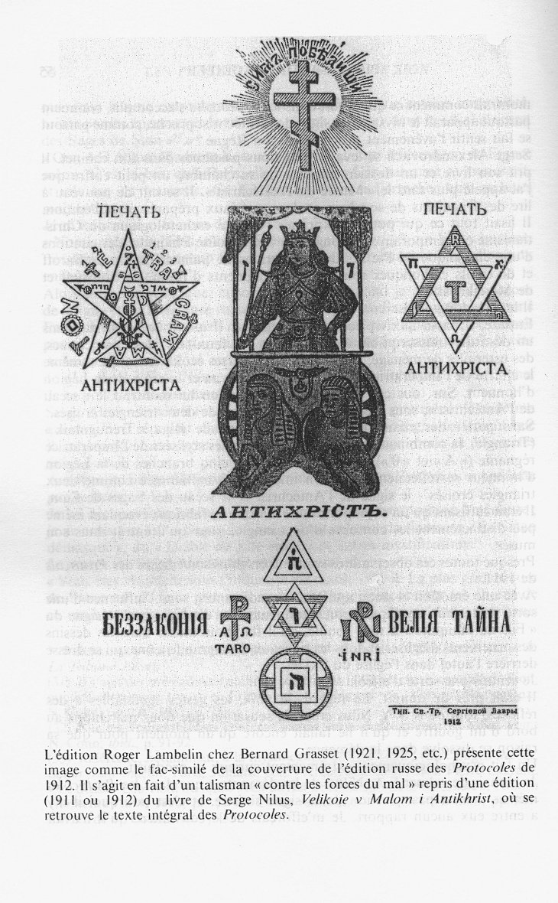

« Serge Alexandrovitch Nilus et les Protocoles des Sages de Sion (1909-1920) » La Tribune Juive, 2e année, n° 72, 14 mai 1921
Préambule La premièer mise en web de ce texte a été effectuée par Xavier Martin-Dupont sur des sites qui n’existent plus aujourd’hui (http://www.gargouille.info/Chaylat.htm puis http://hexamide.org/Chaylat.htm). C’est la raison pour laquelle PHDN a choisi de reproduire ce texte dans sa section consacrée aux Protocoles.
Ce texte est reproduit d’après l’ouvrage de Pierre André Taguieff Les Protocoles des Sages de Sion, tome I: Un faux et ses usages dans le siècle, Berg International Editeur, Paris, 1992, p. 44 et suiv.
Si le texte d’origine de la Tribune Juive de 1921 est du domaine publique il n’en est pas de même de l’appareil critique et des notes qui accompagnent l’ouvrage. Nous encourageons les lecteurs désireux d’approfondir la question à consulter l’ouvrage de Pierre André Taguieff.
Introduction Dans les premiers jours d’avril 1921, après l’évacuation de la Crimée et un séjour de 4 mois à Constantinople, je suis arrivé à Lyon. Quel fut mon étonnement de voir parmi les nouveautés, aux vitrines des librairies de la place Bellecour, l’édition française des Protocols des Sages de Sion, c’est à-dire le même livre que Serge Alexandrovitch Nilus, que je connus personnellement, avait édité en 1902. Le vaste avant- propos rédigé par l’éditeur français, Monseigneur Jouin, tend à donner une analyse critique des éditions précédentes, à établir l’origine du document et à déterminer la personnalité de l’éditeur russe. Il contient certaines inexactitudes d’ailleurs bien compréhensibles. Ensuite, à la lecture des journaux russes paraissant à Paris, je me suis convaincu qu’une polémique s’est engagée dans diverses parties du monde et au sein même de la presse russe autour des Protocoles. L’ensemble de ces observations m’a incité à faire part de mes souvenirs sur S.A. Nilus et son œuvre Je dois déclarer ici, afin de n’y plus revenir que les renseignements donnés sur la personne et l’oeuvre de S.A. Nilus ont été recueillis au cours de rapports prolongés et immédiats avec lui et des personnes le connaissant bien. De plus, ces sources de renseignements ne peuvent être l’objet de suspicion ni sous le rapport de l’honnêteté ni sous celui de l’impartialité. Je ne nourris aucun mauvais sentiment à l’égard de Serge Alexandrovitch Nilus et n’ai pas de raison d’en nourrir. C’est pourquoi, sous de nombreux rapports, j’ai conscience d’être obligé d’épargner sa personnalité et de ne toucher sa vie privée que dans les côtés qui en sont connexes à la vie publique et pour autant que le nécessite la révélation de la Vérité, me rappelant la sentence: Amicus Plato, sed magis amica veritas.
I. Comment j’ai connu S.A. Nilus Vers la fin de janvier 1909, mû par la recherche religieuse, je m’établis, sur le conseil du défunt Métropolite de Saint-Pétersbourg, Monseigneur Antoine, près du célèbre cloître nommé « Optina Poustyne ».
Ce Monastère est situé à six verstes de la ville de Kozelsk dans le gouvernement de Kalouga, entre l’orée d’une grande forêt de sapins et la rive gauche de la Rivière Jizdra.
Auprès du monastère se trouve un certain nombre de villas où résidaient les laïcs désireux de vivre à un degré quelconque la vie monastique.
A l’époque à laquelle se rapportent mes souvenirs, la communauté comprenait environ 400 moines qui s’occupaient d’agriculture et menaient aussi une vie contemplative sous la direction spirituelle de 3 « Anciens ». Il fut un temps où le Monastère d’Optina fut la source d’une influence spirituelle remarquable sur l’un des courants les plus importants de la pensée russe. L’Institut des « Anciens » d’Optina, en la personne des Pères Macaire et Ambroise, fut considéré par les premiers slavophiles comme un centre directeur. Au cimetière monastique, auprès des Pères Macaire et Ambroise, reposent leurs disciples, les deux écrivains frères Kiréevsky. Deux autres célèbres publicistes, Khomiakoff et Aksakoff, visitèrent souvent le monastère, où passa les dernières années de sa vie un autre écrivain célèbre, Constantin Léontieff, devenu oblat.
La bibliothèque monastique garde une très précieuse correspondance avec ces écrivains, ainsi qu’avec Gogol et Dostoïevsky. Ce dernier a immortalisé sous l’image artistique de l’ancien Zocime (dans le roman Les frères Karamazof les traits vivants du Père Ambroise et son enseignement mystique.
Même L.N. Tolstoï visita souvent Optina, et certainement que tous se souviennent que c’est là que fut l’avant-dernière étape, si mystérieuse et encore non expliquée, de sa vie.
Il ne sera pas superflu de souligner ici que les anciens d’Optina, que j’ai connus, les P.P. Varsonophie, Joseph et Anatole n’avaient rien de commun avec les aventuriers de Cour qui entourèrent le trône du dernier Tsar. Les anciens d’Optina étaient des gens éclairés, pénétrés d’un esprit de charité et de tolérance, toujours libres à l’égard des puissants de ce monde et attentifs à la seule douleur humaine; proches du peuple et comprenant son affliction illimitée, ils consacraient tout leur temps à consoler les malheureux et les offensés qui par milliers venaient les trouver.
L’existence de cet institut et la prolongation de certaines traditions intellectuelles religieuses attiraient donc à Optina les intellectuels russes que passionnait la recherche religieuse.
Le jour qui suivit mon arrivée, le Supérieur du Monastère, l’Archimandrite Xénophon, me proposa de me faire faire connaissance de M. S.A. Nilus, écrivain religieux vivant également auprès du Monastère. J’en avais déjà entendu parler à Pétersbourg par M. W.A. Ternawtseff, fonctionnaire pour les missions spéciales auprès du Procureur Général du Saint-Synode et membre de la Société Philosophique religieuse. II m’en avait parlé comme d’un homme intéressant, mais fort original.
Après dîner, dans l’appartement du Supérieur, je fis connaissance de Serge Alexandrovitch Nilus. C’était un homme de 45 ans, un vrai type russe, grand et fort, avec une barbe grise et des yeux profonds, bleus, mais comme légèrement couverts d’un voile trouble. Il était en bottes et vêtu d’une chemise russe, ceinte d’un ruban brodé d’une prière.
S.A. Nilus parlait fort bien le français, ce qui était alors très précieux pour moi. Nous étions tous deux fort contents d’avoir fait connaissance et je ne manquais pas de profiter de son invitation. Il habitait une grande villa de 8-10 pièces, où demeuraient avant les évêques retraités. La maison était entourée d’un grand jardin fruitier clos d’une palissade de bois, au-delà de laquelle noircissait la forêt. Serge Alexandrovitch et sa famille composée de trois personnes n’occupaient que quatre pièces; dans les autres se trouvait un asile entretenu sur la pension que le ministère de la Cour payait à la femme de S.A. Nilus. Cet asile abritait toutes sortes d’estropiés, d’idiots et de possédés, attendant une guérison miraculeuse. En un mot, cette partie de la maison était une véritable Cour des Miracles.
Le logement de Nilus était meublé dans le genre des vieilles demeures seigneuriales avec quantité de portraits impériaux portant des autographes et donnés à la femme de Nilus; il y avait quelques bons tableaux et une importante bibliothèque touchant toutes les branches de la connaissance humaine.
Il y avait aussi un oratoire où Nilus célébrait, selon le rite des laïcs, le culte domestique. Dans la suite, l’évocation de tout cela s’unissait toujours dans mon imagination avec ces hermitages de vieux croyants que nous a dépeints Lieskoff.
La famille Nilus provenait d’un émigré suédois venu en Russie au temps de Pierre Ier. Serge Alexandrovitch assurait qu’en ligne féminine coulait dans ses veines le sang de Maliouta Skouratoff (le bourreau d’Ivan le Terrible). Peut-être est-ce pour cela qu’étant lui-même grand admirateur du servage et de la fermeté antique, il aimait à défendre la mémoire du Terrible.
Personnellement Nilus était un propriétaire ruiné du Gouvernement d’Orel. Il était voisin de terres avec M.A. Stakhovitch, dont il parlait souvent, d’ailleurs pas en bons termes, à cause de « sa libre pensée ». Son frère, Dmitry Alexandrovitch Nilus, était président du Tribunal de Moscou. Les deux frères étaient ennemis. Serge Alexandrovitch tenant Dmitry pour un athée et celui-ci considérant Serge comme un fou.
S.A. Nilus était certainement un homme instruit. Il avait terminé avec succès le cours de la Faculté de droit à l’Université de Moscou. De plus, il possédait à la perfection le français, l’allemand et l’anglais et connaissait à fond la littérature contemporaine étrangère. Ainsi que je l’appris plus tard, S.A. Nilus ne pouvait s’entendre avec personne. Son caractère tumultueux, cassant et capricieux, l’avait obligé à abandonner le service au ministère de la Justice, où il avait reçu un poste de juge d’instruction en Transcaucasie, sur la frontière de Perse. Il avait essayé d’un [sic] faire-valoir dans sa propriété, mais il s’était trouvé trop intellectuel pour cela. Il se passionna pour la philosophie de Nietzsche, l’anarchisme théorique et la négation radicale de la civilisation actuelle. Dans un tel état d’esprit S.A. Nilus ne pouvait vivre en Russie. Il partit pour l’Étranger avec une dame K et vécut ainsi longtemps en France, en particulier à Biarritz, tant que son intendant ne lui eût appris que sa propriété d’Orel et lui-même étaient ruinés.
C’est alors, aux environs de 1900, que sous l’influence de déboires matériels et de graves épreuves morales, il vécut une crise spirituelle qui l’amena au mysticisme. Il en sera question plus bas.
S.A. Nilus me présenta à sa femme, Hélène Alexandrovna Ozerova, ancienne demoiselle d’honneur de l’impératrice Alexandra Féodorovna; elle était fille de M. Ozeroff, Maître de la Cour et ancien ministre de Russie à Athènes. Son frère, le Major-Général David Alexandrovitch Ozeroff, était Maréchal du Palais d’Anitchkoff.
Mme H.A. Nilus, était, au plus haut point, une femme bonne, soumise, et absolument subordonnée à son mari jusqu’à complète abnégation de soi-même, au point d’être dans les meilleurs rapports avec l’ancienne amie de M. Nilus, Madame K., qui, s’étant aussi ruinée, avait également trouvé asile chez eux, dans leur appartement personnel.
C’est ainsi que mes relations avec S.A. Nilus, commencées dans ces conditions, continuèrent pendant 9 mois de mon séjour à Optina jusqu’au 10 novembre 1909. Quand j’y revins dans la suite je faisais toujours mes visites à S.A. Nilus, mais bientôt son intolérance à l’égard des « hérétiques » me força de suspendre nos rapports.
En 1918, il habitait à Kieff l’hôtellerie du Monastère de femmes, dit de la Protection de la Sainte Vierge. J’ai appris que l’hiver de 1918-1919, après la chute du Hetman, il aurait passé en Allemagne et aurait habité Berlin. Ces renseignements me furent confirmés en partie en Crimée par l’ancienne demoiselle d’honneur Kartzeva, sœur supérieure du Lazaret de la Croix Blanche où je me trouvais.
II. « La charte du Royaume de l’Antéchrist » Dès leur début, mes rapports avec S.A. Nilus furent marqués par des discussions sans fin. C’est qu’en nous se rencontraient les adversaires les plus décidés qu’il soit, des gens qui marchent vers une même idée en partant de points opposés, prétendant également la posséder et lui être fidèles.
De sa pensée antérieure anarchiste, S.A. Nilus avait conservé la négation absolue de la civilisation contemporaine; et cette attitude négative il l’adoptait à l’égard de la pensée religieuse en rejetant la possibilité d’appliquer des procédés scientifiques à la connaissance religieuse. II protestait contre les Académies Ecclésiastiques, tendait vers la « foi du charbonnier » et montrait une grande sympathie pour les « Vieux Croyants » dont il identifiait la confession avec la foi sans mélange de science et de civilisation. Il rejetait tout cela avec la culture contemporaine, considérant dans toutes ses manifestations « l’abomination de la désolation dans le Lieu Saint » et la préparation de l’avènement de l’Antéchrist qui coïncidera avec le plus haut développement de la « pseudo-civilisation chrétienne ».
Contrairement à cette thèse, ce sont les courants libéraux du Christianisme Occidental, ces courants qui lavent les Églises des couches historiques artificielles et étrangères à l’enseignement du Christ — qui m’avaient porté rt ici dans le sillage de l’Orthodoxie. Le Modernisme et la critique ancienne catholique, comme méthodes indépendantes de connaissance scientifique de la religion, avaient restauré dans ma conscience l’image de la véritable Église chrétienne. Sa révélation ultérieure s’étais effectuée sous l’influence de A.S. Khomiakoff et de W.S. Solovieff et d’autres représentants plus nouveaux de la pensée religieuse russe.
Cependant, en dépit de nos discussions passionnées, S.A. Nilus me pardonnait beaucoup d’« erreurs ». Mon séjour près du Monastère et mes bons rapports avec les « Anciens » en étaient la cause; c’est pourquoi, en attendant, il ne me vouait pas encore à l’excommunication, mais s’efforçait de me « convertir ».
Le troisième ou le quatrième jour après avoir fait connaissance, pendant une discussion habituelle sur les rapports entre la civilisation et le Christianisme, S.A. Nilus me demanda si j’avais connaissance des Protocoles des Sages de Sion édités par lui. Je répondis négativement.
Alors, S.A. Nilus prit dans sa bibliothèque son livre et se mit à me traduire en français les endroits les plus remarquables du texte et de ses commentaires. Il observait en même temps l’expression de mon visage, car il présumait que je serais abasourdi par cette révélation. Lui-même fut assez troublé quand je lui déclarai qu’il n’y avait rien de nouveau pour moi et que visiblement ce document devait être proche parent des pamphlets d’Edouard Drumont ou de la vaste mystification de Léo Taxil, à laquelle s’était laissé prendre tout l’univers catholique, sans en excepter Léon XIII, homme si intelligent et perspicace.
S.A. Nilus fut ému et déçu; il m’objecta que j’en jugeais ainsi parce que ma connaissance des Protocoles revêtait un caractère superficiel et fragmentaire, de plus, la traduction verbale affaiblit l’impression. Il est indispensable que l’impression soit pleine. Or il me serait facile de prendre connaissance des Protocoles, car leur original était rédigé en français.
S.A. Nilus ne gardait point chez lui le manuscrit des Protocoles craignant qu’il ne lui fût volé par les Juifs. Je me rappelle comme il m’amusa et quelle inquiétude l’agita quand un pharmacien juif de Kozelsk, venu se promener avec quelqu’un des siens dans la forêt monastique, cherchant le chemin le plus court pour gagner le bac se trouva par mégarde dans le jardin de Nilus. Notre pauvre Serge Alexandrovitch fut longtemps convaincu que le pharmacien était venu effectuer une reconnaissance.
Plus tard j’appris que le cahier contenant les Protocoles se trouvait en dépôt jusqu’en janvier 1909 chez le Prêtre Moine Daniel Bolotoff (portraitiste assez renommé à Pétersbourg) et, après sa mort, au Skyte de Saint Jean-le Précurseur, se trouvant à une demi-verste du Monastère, chez le Moine Alexis (ancien ingénieur).
Quelque temps après notre première conversation concernant les Protocoles de Sion, vers 4 heures de l’après-midi, une des infirmes de l’asile Nilus m’apporta un billet: S.A. me priait de venir le voir pour affaire urgente.
Je trouvai Serge Alexandrovitch dans son cabinet de travail; il y était seul, sa femme, [et] Madame K., étant allées aux vêpres. Le crépuscule tombait, mais il faisait clair, car la neige couvrait la terre.
Je remarquai sur sa table à écrire une sorte d’assez grande enveloppe en étoffe noire décorée d’une grande croix à trois branches et de l’inscription « Par ce signe Tu vaincras ». Une petite icône de l’Archange Mikhaïl, en papier, était aussi collée sur cette enveloppe. Visiblement, tout cela avait un caractère d’exorcisme.
Serge Alexandrovitch se signa trois fois devant la grande icône de la Mère de Dieu de Smolensk, copie de la célèbre icône devant laquelle pria l’Armée Russe la veille de Borodino, et ouvrit l’enveloppe dont il retira un cahier dans une reliure de cuir. J’appris ensuite que l’enveloppe et la reliure avaient été préparées dans l’atelier du Monastère sous la surveillance immédiate de Nilus qui apportait et emportait lui-même le manuscrit, craignant qu’il ne fût volé. La croix et autres symboles avaient été dessinés par Hélène Alexandrovna sur les indications de son mari. « La voilà, dit S.A. Nilus, la charte du Royaume de l’Antéchrist. »
II ouvrit le cahier. Sur la première page on remarquait une large tache d’un lilas très clair ou bleuâtre. Je reçus l’impression qu’une fois on y avait renversé un encrier, mais que l’encre avait été enlevée et lavée. Le papier était épais et jaunâtre; le texte écrit en français de mains différentes et — me semble-t-il — avec des encres différentes.
« Voilà, dit Nilus, pendant les séances du Kahal, à des époques différentes, diverses personnes remplissaient les fonctions de secrétaire, d’où diverses écritures. » Visiblement, Serge Alexandrovitch voyait en cette particularité comme une preuve de ce que ce manuscrit était un texte original. Cependant, il n’avait point à cet égard d’opinion constante, car je l’entendis dire une autre fois que ce manuscrit n’est qu’une copie.
Après m’avoir montré le manuscrit, Serge Alexandrovitch le posa sur la table, l’ouvrit à la première page et me donnant son fauteuil dit: « Eh bien, maintenant, lisez! »
En lisant le manuscrit je fus frappé de certaines particularités du texte. Il y avait des fautes d’orthographe et, surtout, les tournures n’en étaient pas françaises. Il s’est passé trop de temps depuis lors pour que je puisse dire que le texte contenait des « russicismes ». Une chose est hors de doute, le manuscrit avait été rédigé par un étranger.
Pendant deux heures et demie se prolongea ma lecture. Quand j’eus terminé, S.A. Nilus prit le cahier, le remit dans son enveloppe et l’enferma dans le tiroir de sa table à écrire.
Pendant la lecture, Hélène Alexandrovna Nilus et Madame K. étaient revenues de l’église, de sorte qu’au moment où je terminais, le thé était servi. Je ne savais pas à quel point Madame K. était initiée au secret du manuscrit, de sorte que je me taisais. Or, Nilus désirait vivement connaître mon opinion, et, me voyant gêné, il devina exactement la cause de mon silence:
« Allons, dit-il en plaisantant, Thomas l’incrédule, avez-vous la foi maintenant que vous avez touché, vu et lu les Protocoles. Dites-nous votre opinion. Ici, il n’y a pas d’étrangers; ma femme sait tout et, pour ce qui est de Madame K, c’est donc grâce à elle qu’ont été découverts les complots des ennemis du Christ. D’ailleurs, ici, il n’y a pas de mystère. » Je fus très intéressé. Etait-il donc possible que les Protocoles fussent parvenus par Madame K. en la possession de Nilus? Il me semblait étrange que cette femme extrêmement obèse jusqu’à presque entière immobilité, brisée par les épreuves et la maladie, eût pu pénétrer dans le « Kahal secret des Sages de Sion ».
« Oui, — dit Nilus, Madame K. a vécu très longtemps à l’étranger, en France même. C’est là-bas, qu’à Paris, elle a reçu d’un Général russe ce manuscrit, et elle me l’a transmis. Ce Général a réussi à l’arracher aux archives maçonniques. » Je m’informais si le nom de ce Général était un secret. « Non, répondit Nilus, c’est le Général Ratchkovsky, un brave homme, très actif, qui a beaucoup fait en son temps pour arracher l’aiguillon aux ennemis du Christ. » Alors je me souvins que, encore en France, quand je prenais des leçons de langue et de littérature russe chez un émigré étudiant en lettres, nommé Ezopoff, ce dernier m’avait raconté que la police politique russe ne laissait pas en paix les révolutionnaires même sur la terre française et qu’à la tête de la police avait été un certain Ratchkovsky.
Je demandai à S.A. Nilus, si le Général Ratchkovsky n’avait pas été chef de la police politique russe en France.
Serge Alexandrovitch fut surpris et même quelque peu mécontent de ma question; il répondit d’une façon indéfinie, mais souligna fortement que Ratchkovsky lutta avec abnégation contre la maçonnerie et les sectes sataniques.
Avant tout, Serge Alexandrovitch voulait connaître l’impression produite par la lecture.
Je lui déclarai sans ambages que je demeurais sur ma position antérieure; je ne crois pas aux « Sages de Sion ». Tout cela est du domaine de « Satan démasqué », du « Diable au XIXe siècle » et autres mystifications.
Le visage de Serge Alexandrovitch s’assombrit.
« Vous êtes vraiment sous l’influence du diable — dit-il. La plus grande ruse de Satan est de faire nier non seulement son influence sur les choses de ce monde, mais jusqu’à son existence. Que diriez-vous donc si je vous montrais comment ce qui est dit dans les Protocoles s’accomplit, comment partout apparaît le mystérieux signe de l’Antéchrist proche, comme partout se fait sentir l’avènement prochain de son Règne? »
Serge Alexandrovitch se leva et tous nous passâmes dans son cabinet. II prit son livre et un dossier, apporta de sa chambre un petit coffre que j’ai appelé plus tard le « Musée de l’Antéchrist ». Il se mit de nouveau à lire des fragments de son livre et des matériaux préparés pour l’édition. Il lisait tout ce qui pouvait exprimer l’attente eschatologique du Christianisme contemporain: les songes du Métropolite Philarète, des citations d’une encyclique de Pie X; des prédictions de Saint-Séraphin de Sarof et de saints catholiques romains, des fragments d’Ibsen, de Solovief et de Merejkovsky.
II lut très longtemps.
Ensuite, il passa aux « pièces à conviction ». Il ouvrit son coffret. Dans un désordre indescriptible s’y trouvaient des faux cols, des caoutchoucs, des ustensiles de ménage, des insignes de diverses écoles techniques, même le chiffre de l’Impératrice Alexandra Féodorovna et la croix de la Légion d’honneur. Sur tous ces objets son hallucination lui montrait le « sceau de l’Antéchrist », sous l’aspect d’un triangle ou de deux triangles croisés. Sans parler des caoutchoucs de la Fabrique de Riga « Treougolnik » (Triangle), la
combinaison de deux initiales russes stylisées de l’Impératrice régnante (« A » et « »), ainsi que la croix à cinq branches de la Légion d’honneur se reflétaient dans son imagination enflammée comme deux triangles croisés — le signe de l’Antéchrist et le sceau des Sages de Sion. Il était suffisant qu’un objet portât une marque de fabrique évoquant même peu distinctement les contours d’un triangle, pour qu’il entrât dans son musée.
Presque toutes ces observations sont entrées dans son édition des Protocols de 1911.

Avec une émotion et une inquiétude grandissantes, sous l’influence d’une sorte de terreur mystique, mon interlocuteur m’expliqua que le signe du « Fils de l’iniquité » a tout souillé, qu’il flamboie même dans les dessins des ornements d’églises et dans les rinceaux de la grande icône qui se dresse derrière l’autel dans l’église du Skyte.
Je sentais une sorte d’effroi.Il était près de minuit. Le regard, la voix, les gestes semblables à des réflexes, tout dans S.A. Nilus créait la sensation que nous marchions au bord d’un gouffre et qu’il ne fallait encore qu’un moment pour que sa raison se dissolve dans la démence.
Un fait psychologiquement extrêmement curieux se produisit. Je tâchais de calmer S.A. Nilus, de lui démontrer que dans les Protocoles mêmes il n’est pas question de ce signe sinistre, et c’est pourquoi il n’y a entre eux aucun rapport. Je m’efforçais de le convaincre qu’il n’avait rien découvert, parce que ce signe est noté dans tous les travaux d’occultisme depuis Hermès Trismégiste et Paracelse, qui n’étaient pas des « Sage de Sion », jusqu’à nos contemporains Papus, Stanislas de Guaïta, etc., qui n’étaient pas juifs. Du reste le fameux « signe de l’Antéchrist » ne contient rien d’antichrétien, exprimant la descente de la Divinité dans l’Humain et l’ascension de l’Humanité vers le Divin.
Serge Alexandrovitch notait fiévreusement mes arguments et bientôt je vis que ma tentative de le ramener à la raison, loin d’atteindre le but, avais seulement exaspéré jusqu’à l’extrême limite ses sensations morbides.
Quelques jours plus tard, il expédiait à Moscou, à la librairie Gauthier, une grande commande de livres concernant les sciences hermétiques, et 2 ans plus tard, en 1911, parut la 3eéditions des Protocoles avec de nouvelles données tirées de l’occultisme et des illustrations empruntées aux auteurs cités. Sur la couverture, sous un titre nouveau: « Près de l’Antéchrist qui est proche ou le Royaume du diable sur la terre », on voyait la carte du Roi dans le jeu de Tarot avec cette inscription: « Le voilà l’Antéchrist! »
Ainsi le portrait même n’y manquait pas.
Je terminerai ce chapitre par deux traits qui caractérisent assez nettement la physionomie de S.A. Nilus. En 1909, pendant mon séjour à Optina, se déroulait à Pétersbourg le procès du Conseiller d’État actuel Lopoukhine, ancien Directeur du Département de Police. Involontairement, le sous-sol policier de l’Ancien Régime s’ouvrait à la curiosité publique. Je demandais à Serge Alexandrovitch, lui rappelant ce que j’avais entendu dire du « Général Ratchkovsky »: — « Ne pensez-vous pas, Serge Alexandrovitch, qu’un Azef quelconque a pu duper le Général Ratchkovsky et que vous opérez sur des faux. »
— « Vous connaissez — répondit-il, ma citation préférée de saint Paul: “La force de Dieu s’accomplit dans la faiblesse humaine.” Admettons que les Protocoles soient faux. Mais est-ce que Dieu ne peut pas s’en servir pour découvrir l’iniquité qui se prépare? Est-ce que l’ânesse de Balaam n’a pas prophétisé? Est-ce que Dieu, en considération de notre foi, ne peut pas transformer des os de chien en reliques miraculeuses? Il peut donc mettre dans une bouche de mensonge l’annonciation de la vérité! »
En juin juillet 1909, les journaux russes annonçaient la seconde révolution jeune-turque. L’armée de Mahmoud-Schefket-Pacha s’approchait de Constantinople. Un jour, je vins voir Serge Alexandrovitch et le trouvais dans un état d’excitation extraordinaire. Devant lui se trouvait déployée la carte d’Europe donnée en supplément par le Rousskoié Znamia dont il est question à la page 128 de l’édition française des Protocoles. Sur cette carte est représenté un serpent rampant et se trouve tracé son chemin historique à travers les États d’Europe qu’il a conduits. Constantinople est la dernière étape avant Jérusalem.
Je demandais à Serge Alexandrovitch:
— Qu’est-il arrivé?
— La tête du serpent s’approche de Constantinople, répondit-il. Ensuite, S.A. Nilus se rendit à l’église commander un service propitiatoire pour que Dieu accordât la victoire au Sultan.
Le prêtre hebdomadaire ne consentit pas à commémorer le serviteur de Dieu Abdoul-Hamid. Nilus s’en fut se plaindre à l’« Ancien » Varsonophie, qui dut, d’ailleurs bien en vain, employer beaucoup d’efforts pour le convaincre que le Sultan Rouge recevait une juste punition de ses massacres de chrétiens et de ses persécutions contre nos coreligionnaires. Au reste, Serge Alexandrovitch ne se calma point et revint dans une grande colère et vraiment révolté des raisonnements de l’« Ancien ».
III. Comment A.S. Nilus édita les Protocoles En commençant l’exposé de mes souvenirs sur S.A. Nilus et les Protocoles des Sages de Sion, je concevais que les données dont je dispose ne sont que des matériaux pour ceux qui, se fondant sur un éclaircissement de tous les aspects du problème, pourront solutionner la question d’origine de ces Protocoles. C’est pourquoi j’ai fermement décidé de ne pas entrer en polémique ni avec l’éditeur français, ni avec les organes de presse qui ont traité de cette question.
Cependant, j’estime absolument indispensable, avant d’exposer l’enchaînement de circonstances qui rendit S.A. Nilus possesseur des Protocoles, de porter l’attention du lecteur sur une particularité de l’édition de 1917, qui a été relevée par Monseigneur Jouin. J’ai en vue la déclaration de S.A. Nilus, que le manuscrit lui aurait été remis par le Maréchal de Noblesse Alexis Nicolaïévitch Soukhotine. Cette version contredit l’autre déclaration que me fit Serge Alexandrovitch, selon laquelle le manuscrit fut reçu de Ratchkovsky par Madame K.
Connaissant la vie intime de Nilus, je comprends fort bien qu’il ne pouvait mettre en lumière, dans un écrit public, Madame K.; la mystérieuse dame, dont il est question dans ses éditions.
Je suis éloigné de penser que A.N. Soukhotine soit un personnage mythique, mais je suis convaincu qu’il fut l’intermédiaire, le courrier chargé par Madame K., se trouvant alors en France, de remettre le précieux manuscrit à S.A. Nilus qui se trouvait déjà en Russie. Pour des considérations d’ordre intime Soukhotine devint le paravent cachant au lecteur la dame mystérieuse, Madame K.
En ce qui concerne la transmission du manuscrit, elle eut lieu dans les circonstances suivantes:
En 1900, Serge Alexandrovitch Nilus, absolument ruiné, rentra en Russie converti. II se mit à voyager, plus exactement à faire des pèlerinages, de monastère en monastère, se nourrissant parfois de seul pain bénit. C’est alors qu’il écrivit ses Notes d’un Orthodoxe ou le Grand dans le Petit, qui grâce au concours de l’Archimandrite (ensuite évêque et archevêque de Vologda) Nicone furent imprimées dans les Feuillets de la Trinité à Serghiev Possad (70 verstes de Moscou) et en brochure détachée.
Ce petit livre, décrivant la conversion d’un intellectuel athée et le processus de sa renaissance mystique fut l’objet de comptes rendus donnés par le directeur des Moskoyskia Viédomosti, M.L. Tikhomiroff, un révolutionnaire russe converti et par l’Archimandrite Nicone dans la Semaine Religieuse de Moscou. Ces notes de la presse bien-pensante parvinrent jusqu’à la grande-duchesse Élisabeth Féodorovna qui s’intéressa à l’auteur. La grande-duchesse Élisabeth Féodorovna avait toujours lutté contre les aventuriers mystiques qui entouraient Nicolas II et surtout contre l’influence du magnétiseur lyonnais Philippe. Elle n’aimait pas le confesseur de leurs Majestés, l’archiprêtre Yanyscheff qui n’avait su préserver le tsar de ces influences mystiques malsaines. La grande-duchesse pensait que S.A. Nilus, comme russe et mystique orthodoxe, pourrait avoir une influence favorable sur le tsar.
Le Major-Général Michel Pétrovitch Stépanoff, frère de Philippe Pétrovitch Stépanoff, procureur du Comptoir Synodal à Moscou, et parent éloigné de la famille Ozeroff, était attaché à la personne d’Élisabeth Féodorovna dont il possédait toute la confiance, de sorte qu’il resta attaché à sa personne même quand la grande-duchesse prit le voile. C’est par son intermédiaire que Serge Alexandrovitch fut envoyé à Tsarskoié Siélo et présenté à la demoiselle d’honneur Hélène Alexandrovna Ozeroff. Cela se passait en 1901.
Quand Serge Alexandrovitch avait quitté la France, il y avait laissé à Paris une personne fort proche, Madame K. Ayant perdu presque toute sa fortune, abattue par la séparation, la malheureuse femme s’inclina aussi du côté du mysticisme et s’intéressa aux petites chapelles occultistes de Paris. C’est dans ces conditions qu’elle aurait reçu de Ratchkovsky, lequel fréquentait également dans ces cercles, le manuscrit des Protocoles des Sages de Sion qu’elle expédia à Nilus.
Il est fort possible que Ratchkovsky, qui s’efforçait à ce moment, dit-on, d’annihiler l’influence de Philippe sur le Tsar, ayant été informé du rôle que l’on prédestinait à S.A. Nilus, eut un désir de profiter de la circonstance pour éliminer définitivement Philippe et s’assurer les bonnes dispositions du nouveau favori. Quoi qu’il en soit, quand, en 1901, S.A. Nilus vint à Tsarskoié, il était déjà en possession des Protocoles.
S.A. Nilus produisit une forte impression sur H.A. Ozerova et la coterie de Cour adverse de Philippe. C’est grâce à l’aide de ces personnes qu’il fit paraître en 1902 la première édition des Protocoles, à titre d’annexes au texte transformé de sa brochure sur ses propres expériences religieuses. Le livre parut sous le titre: Le Grand dans le Petit et l’Antéchrist comme possibilité politique proche.
Le livre fut alors présenté à l’impératrice et au tsar. Simultanément, en rapport avec la campagne menée contre Philippe, ses adversaires conçurent la combinaison suivante: le mariage de S.A. Nilus et H.A. Ozerova, son ordination et introduction auprès de l’empereur dont il serait devenu le confesseur. L’affaire marchait si bien que S.A. Nilus avait déjà commandé ses vêtements de prêtre.
Je me souviens qu’au printemps de 1909 on mettait à l’air divers vêtements dans lesquels je remarquai les soutanes de Nilus confectionnées en 1902. Cependant, le parti Philippe réussit à parer le coup en informant les autorités ecclésiastiques de l’existence d’un empêchement canonique, dont la nature m’est connue, prohibant l’ordination de S.A. Nilus.
Après cela, Nilus tomba en disgrâce et dut s’éloigner de Tsarskoié-Siélo. De nouveau, sans d’autres ressources que les maigres honoraires reçus pour sa collaboration aux Feuillets de la Trinité, il recommença à errer de monastère en monastère. Le mariage était impossible, car H.A. Ozerova ne possédait d’autres ressources que la pension, liée avec la charge de cour et le service diplomatique de feu son père, pension dont elle eût été privée si elle se fût mariée.
En 1905, il n’y avait déjà plus l’influence de Philippe, hostile à Nilus. Les amis de H.A. Ozerova à la Cour obtinrent de Nicolas II le consentement impérial à ce qu’il lui fut concédé le droit de recevoir sa pension, même au cas où elle se marierait. C’est alors aussi que par les soins de H.A. Ozerova parut la deuxième édition des Protocoles, avec de nouveaux matériaux concernant Saint-Séraphin de Saroff. Il me souvient que cette édition portait un titre modifié; elle parut à Tsarskoié-Siélo et, me semblet-il, sous les auspices de la communauté locale de la Croix-Rouge, avec laquelle était en rapport H.A. Ozerova.
S.A. Nilus épousa H.A. Ozerova, mais l’empêchement canonique dont il a été question demeurait en vigueur et il était impossible de penser au sacerdoce ou à une influence spirituelle sur le tsar. Au reste, S.A. Nilus était un homme trop simple et trop rude pour exercer une influence prolongée sur le tsar et je doute même que personnellement il en eût le désir. Après leur mariage, les Nilus abandonnèrent pour toujours Tsarskoié et Pétersbourg; ils s’installèrent d’abord près du monastère de Valdaï et ensuite, en 1907, prés d’Optina Poustyne, où je les trouvais en 1909. Leur genre de vie, je l’ai dit, était des plus modestes et la plus grande partie de la pension de 6 000 roubles, reçue par Hélène Alexandrovna, était affectée à l’entretien des pèlerins, des idiots et des infirmes qui trouvaient asile chez eux. C’est chez eux aussi qu’après sa ruine définitive, se réfugia, malade, Madame K., grâce à laquelle virent le jour et firent assez de bruit et de mal, les Protocoles des Sages de Sion, la remarquable découverte du « général Ratchkovsky ».
IV. L’église russe, l’opinion russe et les Protocoles de Sion Les deux premières éditions (1902-1905) des Protocoles passèrent complètement inaperçues. Il me semble que seulement en 1907, L. Tikhomiroff répondit à leur apparition, en insérant dans ses Moskovskia Viédomosti un article de fond d’un caractère eschatologique, intitulé: « Hannibal est aux portes ». Peut-être est-ce l’édition de Boutmy, parue en 1907, qui en fut le prétexte.
Les revues théologiques, qu’éditaient nos Académies de théologie, ne dirent mot ni de ces éditions, ni des suivantes. Au reste, il est douteux que les premières éditions aient pu pénétrer jusqu’à l’opinion, car leur tirage était limité et il n’y avait aucune vente.
De tout l’épiscopat, seul l’archevêque Nicone de Vologda, membre du Conseil de l’Empire, connu par ses appels aux persécutions contre les dissidents, accordait une importance à ce livre et lui consacra une note dans les Feuillets de la Trinité. Les hauts représentants de la hiérarchie considéraient non seulement avec défiance l’édition de Nilus, mais craignaient d’y trouver un nouvel aspect de secte, parce que si l’on prophétise l’avènement de l’Antéchrist, il faut annoncer aussi le second avènement du Christ. Il m’arriva de causer de Nilus et de son œuvre avec des hiérarques connus de l’Église russe, le métropolite Antoine et l’archevêque Serge. Tous deux eurent à souffrir pour avoir ouvertement dénoncé le péril venant de Raspoutine et étaient des adversaires déclarés des influences secrètes sur le tsar. Ils ne connaissaient Nilus que par ses œuvres et en avaient une mauvaise opinion, supposant qu’il poursuivait un but non désintéressé, ce que je ne crois pas, car je continue à le considérer comme un fanatique convaincu.
Pour ce qui est des anciens d’Optina, tant que Nilus s’abstenait de la propagande de ses idées, ils le considéraient avec une grande condescendance et même une certaine attention. En effet, la dernière édition des Protocoles se référait à l’année 1905 et, dans l’intervalle entre 1905 et 1911, Serge Alexandrovitch, arrivé à Optina en 1908, en dehors de la bienfaisance et de l’observation rigoureuse des règles ecclésiastiques, ne s’occupait qu’à écrire des tracts spirituels et des Vies de Saints. Il fit paraître en 1907 un petit recueil de récits ayant trait à la mort du Juste.
II est indispensable de remarquer qu’à cette époque même, on ne pouvait compter les « Anciens » au nombre des disciples de Nilus. Je me souviens entre autres que le père Varsonophie me demanda plusieurs fois si Nilus ne m’importunait pas avec ses Protocoles; il lui faisait aussi grief de vouloir ériger en dogme son opinion personnelle.
Leur attitude envers Nilus fut tout autre après son édition de 1911, effectuée aux frais d’un marchand, vieux croyant de Kozelsk.
S.A. Nilus avait combiné avec la sortie de cette édition de sous la presse, l’inauguration de sa prédication sur le prompt avènement de l’Antéchrist. Il s’adressa aux patriarches d’Orient, au Saint-Synode et au pape, avec une épître réclamant la convocation du VIIIe Concile œcuménique, pour y prendre des mesures communes à toute la chrétienté contre le prochain avènement de l’antéchrist. En même temps, prêchant aux moines d’Optina, il fixa à 1920 cet avènement. La paix monastique étant troublée, on le pria d’abandonner le cloître pour toujours.
J’ai remarqué les premiers indices d’un intérêt public pour les Protocoles en 1918, aux temps de l’ataman Krasnoff, quand je me trouvais au Don. L’édition de 1917 avait passé tout à fait inaperçue à cause des troubles révolutionnaires. L’émission d’une nouvelle édition à bon marché était dirigée en 1918, à Novotcherkassk, par M. Ismaïloff, avocat du barreau de Moscou, et le lieutenant-colonel Rodionoff auteur du roman intitulé Notre crime. Le journal La Sentinelle, connu par ses appels aux pogroms, faisait la réclame.
Encore bien avant la démission de Krasnoff, la Diète du Don avait exigé la suppression de tout subside à ce journal, qui cessa de paraître en février 1919.
C’est alors que le centre de la propagande antisémite et le dépôt de l’édition des Protocoles furent transférés à Rostoff où, après la démission de N.E. Paramonoff, qui géra pendant un très court laps de temps le département de la Propagande du Gouvernement Denikine, la propagation de cet écrit reprit de nouveau. Comme ancien chef du service politique à l’armée du Don, service qui préparait pour le commandement d’armée des rapports sur la politique intérieure et extérieure, j’ai disposé de données attestant que ce n’est pas seulement Pourischkiévitch, mais encore bien d’autres publicistes, affiliés à la Propagande du gouvernement de Denikine, qui s’occupaient de la diffusion des Protocoles à Rostoff, Kharkoff et Kieff. Les Protocoles étaient expédiés aux unités de l’armée volontaire, aux troupes cosaques du Kouban, d’ailleurs sans la participation du gouvernement koubanais. Ils servaient de nourriture à une agitation en faveur des pogroms qui donna, sous ce rapport, des résultats à la fois brillants et des plus pernicieux. Cette propagande démoralisa les troupes en justifiant les pillages et fut une des causes de notre défaite.
Une circulaire contre cette propagande fut bien expédiée aux aumôniers de régiments par l’archiprêtre Georges Schavelsky, chef du clergé militaire, mais ses effets furent paralysés par l’attitude d’une partie des officiers. Pendant l’été 1918 arriva à Rostoff un ancien professeur de l’Académie de Moscou, M. Malakhoff, qui commença une agitation antisémite en se basant sur les Protocoles. Le lieutenant-général Semenoff, préfet de la ville, n’y put faire obstacle, car ces conférences étaient organisées par le département de la Propagande du gouvernement Denikine.
Au Don, à partir de février 1919 et tant que le pouvoir d’État de la République du Don exista de fait comme un pouvoir indépendant, la diffusion des Protocoles ne fut pas autorisée.
Les Protocoles ont eu une signification importante dans les pogroms d’Ukraine. Un de mes amis, le colonel Dzougaeff, d’origine ossète, m’a raconté ce fait caractéristique. Se trouvant à Kieff pendant la lutte entre le hetman Skoropadsky et Petlioura, il s’en était échappé sous un déguisement, pour se rendre au Don. A Loubny il fut arrêté par les gens de Petlioura qui, l’ayant d’abord pris pour un Juif, voulaient le fusiller. Un des chefs lui en avait donné la raison au cours de l’interrogatoire « Vous voulez, dit-il, nous donner un roi à la tête d’or (!). Cela fut dit à la séance de vos Sages de Sion ». La cause de la vague de pogroms qui couvrit l’Ukraine résidait visiblement dans cette agitation et non dans la politique du Directoire.
Le gouvernement de la Crimée par le général Wrangel fut l’époque par excellence de la propagande antisémite basée sur les Protocoles. Le professeur Malakhoff, le prêtre Vostokoff, les journalistes Nojine et Rouadze, subsidiés par le Gouvernement, criaient à tous les carrefours le danger des Protocoles et le complot universel judéo-maçonnique. Cependant, cette bruyante campagne n’eut pas de résultats réels et importants.
En résumé, en Russie même où virent le jour les Protocoles, leur influence fut longtemps nulle. Elle se manifesta seulement comme tentative de justifier en principe les brigandages de la guerre civile. C’est pourquoi je fus assez étonné de voir les Protocoles des Sages de Sion traduits en les principales langues d’Europe.
On est fondé de supposer que cet intérêt s’est manifesté en rapport avec les événements vraiment apocalyptiques de notre époque, événements inexplicables pour un grand nombre. Mais il me semble que ce mode d’explication d’un cataclysme historique ressemble fort aux pratiques divinitoires des femmes d’Orient sur le Quai de Galata, où, dans les linéaments capricieux de pierres et de monnaies jetées au hasard, on vous montre les traits indécis du présent et de l’avenir.
Dans l’histoire de la propagation des Protocoles, il est digne d’être remarqué qu’à l’exception d’un petit groupe de personnes, les représentants de l’Église russe, malgré les fautes d’un passé récent, ont su s’abstenir d’y coopérer. Particulièrement significative fut l’attitude des « Anciens » d’Optina envers Nilus.
Je suis convaincu que ce ne sont pas les Vostokoff et les Malakhoff qui expriment l’esprit de l’Église, mais bien les solitaires qui ont compris la sagesse du Maître.
Pour les gens vraiment religieux, pour ceux qui ne considèrent pas la foi comme « l’ancilla politica », l’eschatologie chrétienne ne s’exprime pas dans les révélations morbides d’un Nilus, prophète de la décadence spirituelle, mais bien dans le lumineux enseignement de W.S. Solovieff, ce docteur contemporain de l’Église, universelle, qui avait pressenti dans son 3e Dialogue sur les temps derniers, l’unité proche de tous les fils du Dieu unique pour la défense du patrimoine commun, car toute notre culture spirituelle repose également sur les fondements éternels des deux Testaments.